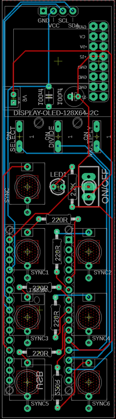
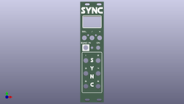
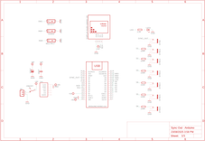
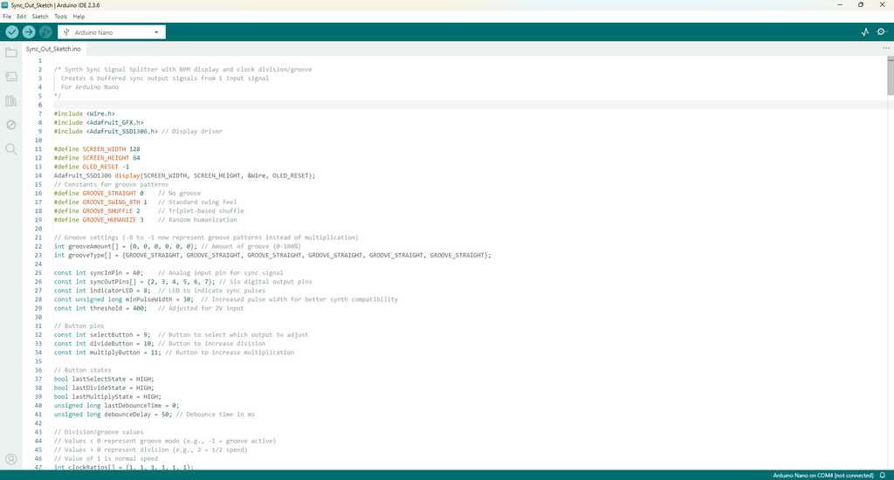

All of the parts needed to build your own can be found below. I have also included a PDF of all of the parts as well which is attached to this step. The PCB and front panel can be found on the next step.PARTS:Capacitor Polypropylene X 1 - Ali ExpressCapacitor Polarized X 1 - Ali ExpressSwitch - Momentary X 3 - Ali ExpressSwitch - Toggle X 1 - Ali ExpressFemale Header Pin Socket X 2 - Ali ExpressArduino Nano X 1 - Ali ExpressAudio Socket X 7 - Ali ExpressMini JST Connector and wire X 1 - Ali ExpressLED X 1 - Ali ExpressOLED Display 128X64 X 1 - Ali ExpressResistors - Ali Express220 X 62.2K X 1Parts List.pdfDownload




We all have different levels of knowledge, so when it comes to a build like this I want to make sure that I'm providing enough information so anyone with some basic soldering skills can make it. That includes ensuring there are instructions on how to get your own PCB's printed (which is super easy!)So with that said, the first thing you will need to do is to get the front panel and PCB printed. I use JLCPCB (not affiliated) to get this done. The front panel is actually just a PCB without any components included! The front design is done in a program called Inkscape (available free) and the panel including the drilled holes is done in Fusion 360 (also free!)The files that you need to build your own Bleep Drum Synth can be found in my GitHub page. This includes the parts list, Gerber files for the PCB & front panel, schematic, Arduino script etc. Download the files to your computerSTEPS:Send the Gerber files to a PCB manufacturer like JLCPCB who will print the PCB and front panel for you. Download all of the files from my GitHub page to your computer and send the zipped Gerber files off to the PCB manufacturer of choice.If you have no idea what any of the above means , then check out the Instructable I made on how to get your broads printed which can be found here.NOTE: The manufacture will include an order number on both the PCB and front panel. It doesn't really matter where it is on the PCB but you don't want it on the front on the front panel!Over at JLCPCB you can 'specify a location' once the Gerber files have been loaded so click this for the front panel and specify in the comment section that you want the order number on the back of the panel. The manufacturer will add it to the back where indicated.


The PCB is 2 sided with the Arduino and caps being soldered on the reverse side.STEPS:The first thing to do is to solder the resistors to the PCB. Now you can solder into place the JST connector. This is how I power muy modules. I have also included a 16 Pin Eurorack connector which you can use to power the synth via 12VAt this stage it’s best to flip the board over and add the Arduino. If you don’t and add the rest of the components, you’ll find it tricky to add the Arduino later.


Next step is to add the Arduino to the PCB. There is a way to do this that ensures it fits perfectly each time.STEPS:First, add the header pins to the pins on the Arduino.Now, put the header pins into the PCB and add some solder to the corner legs to hold it into place. Make sure that the rest of the header pins are sitting correctly in the PCB.Now you can solder the rest of the pins to the PCB.Remove the Arduino once done so you can get at the legs of the components that need to be soldered on nextOh, and you may as well solder into place the 2 capacitors on the reverse side


Now it’s time to add the rest of the components.STEPS:Solder the audio 3.5 connectors into place – all 7 of themNow do the momentary switches and the toggle switchThe last thing to solder is the OLED screen. Add a female header pin to the PCB and the solder into place 4 X male header pin to the OLED. Remove the little plastic spacer on the 4 X male header pin and trim each leg about the same height as the spacer.Now push the OLED into place. It should now be the exact right height to go flush onto the front panel.

It’s always good practice to test the PCB first before adding the front panel. Before we can test, we need to load the sketch into the Arduino.If you are new to Arduino and want learn how to upload a sketch to Arduino - then check out this link. It's really straight forward and doesn't need any special tools - just a computer and a USB cord.STEPS:Open the sketch in the Arduino folder which will take you to Arduino IDE. This can be found in the folder that you downloaded from my GitHub pageConnect your Arduino and upload the sketchOnce the sketch is loaded to Arduino you can connect it to the PCB for testing.Connect the PCB to a 9V to 12V power source and check that the buffered multi works. The screen should come on with 'Sync' and if you push select, the screen should change to the BPM and menu for changing the speed of each Sync in


Right – now it’s time to add the front panel to the PCB.STEPS:Place the front panel on top of the PCB and push into place. It’s a nice, snug fit so just give it a wiggle to make sure that the components push through the holesAdd the nuts to the audio 3.5mm jacks and secure them into place. You can actually make your own tool to easily secure these if you want to – check out this buildNow add the nut to the on/off switch.Once the front panel is in place, you can do a final test before sticking it into your Eurorack case


Takes one sync input signal and produces six individually configurable outputsShows current BPM on OLED displayEach output can be configured with:Normal sync (1:1)Clock division (1/2, 1/4, 1/8)Three groove patterns:GS: Swing (delays off-beats by fixed amount)GF: Shuffle (creates triplet-based rhythm)GH: Humanize (adds random timing variations)Groove Implementation Swing (GS) = consistent delayed off-beatsDelays off-beats by shifting timing up to 66% through beatVery classic swing feel at 50-75% intensitiesClean implementation with consistent timingShuffle (GF) = polyrhythmic feel with specific timing ratiosCreates 2-against-3 feel using weighted offset timingDistinct from swing - pushes toward triplet territoryAt 75%, approaches dotted 8th feeling (funkier)Humanize (GH) = unpredictable variationsAdds random timing variation around off-beatsMuch stronger randomization (up to 40% of beat)More chaotic/organic feel compared to othersEach mode serves a distinct musical purpose, and the intensity levels (50%/75%) allow meaningful adjustment.The two intensity levels (50% and 75%) offer enough adjustability without overcomplicating the interface. This gives users six distinct groove feels to choose from (three types × two intensities)